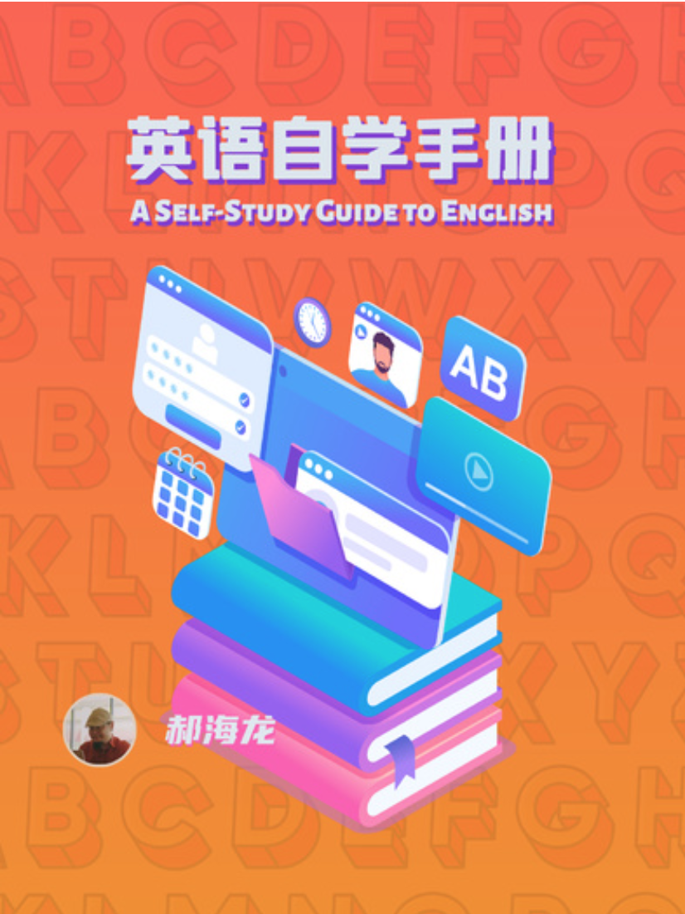

Make It Stick
提取、间隔与交织练习，以及如何检验“我真的学会了吗”。为这个页面提供主要的学习原则。
观看读书视频 ↗反复阅读会让内容越来越熟悉。但要知道自己是否掌握，可以合上材料试一次，再隔一段时间、换一个情境试一次。
Anki，把方法放进日常。
先尝试回答，再看反馈；
把下一次复习交给安排。
先在心里说出意思，或想起一个见过它的句子。别急着翻面，把“好像知道”变成一次真正的回答。
看提示，给出自己的答案。
看释义、例句或发音，找到差别。
在 Anki 中按实际表现评分；忘记了就选 Again。
核对自己想起的意思，再读一遍截图中的《小王子》例句，把这个词放回上下文。
这里演示卡片翻面，不记录复习进度。单词卡练习识别；主动表达还需要另外练。
自制 Anki 卡片 · 局部展示，点击可查看原图
记住，是为了在卡片外用出来。 Anki 帮你安排回忆与复习；阅读、听力、说话和写作，让你在真实情境中继续理解和运用。
先理解基本内容，再适当拉开时间、混合题型、改变情境。每次练习后核对答案，让困难变得有用。
把练习分散到不同时间，让自己再次提取记忆。刚学会时顺利答出，不等于过几天还能做到。
今天看懂一个例句，之后按 Anki 的安排回来补全句子。再次遇到困难，就核对答案、重新理解。
不必照搬固定的“第 1、3、7 天”。复习间隔应结合你的实际表现调整。
从第一周就开始小范围使用英语。
25 周之后，把更多时间投入自己感兴趣的内容。
完成到期复习，先回答再看答案。复习负担大时，减少新增内容。
观看每周视频，学一个发音、句型或词语。遇到不懂的，先解决理解。
读一段、听一段，或说写几句话。留下与自己有关、值得再练的表达。
查证表达、修正错误。反复答错的卡片，拆小问题或补充明确的提示。
以 Make It Stick 的学习原则为主线，结合语言学习方法与成人自学经验，整理成这个项目的实践安排。
提取、间隔与交织练习，以及如何检验“我真的学会了吗”。为这个页面提供主要的学习原则。
观看读书视频 ↗
从声音入手，用画面和语境建立联系，把词汇与语法拆成可以回忆的小问题，再用间隔复习巩固。
观看读书视频 ↗
从自己的目标和基础出发。结合本页的方法，选择合适的材料与工具，把练习带到阅读、听力和实际交流中。
看看 25 周学习安排 ↗本页为学习方法的整理与英语学习应用，不是书籍原文。成人自学路径的整理另参考张奕源 Nick 的手册，与上图郝海龙《英语自学手册》为不同资料。
Anki 官方：主动回忆与间隔复习 ↗